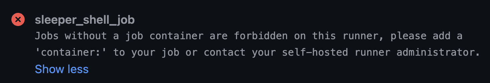

Demo - Conan and ZFS and Kubernetes CI (Oh my!)#
Introduction#
Continuing our work with Conan Sandboxes with ZFS and Conan DevContainers with ZFS in Kubernetes, this time we'll explore implementing a CI solution in our Kubernetes environment using GitHub Actions Runner Controller (ARC) with OpenEBS.
We'll skip over most of the boilerplate and default setup and focus on just the special configuration details required for leveraging our ZFS Conan Cache in Kubernetes effectively.
{kind=link}
Check out Excalidraw and their nifty diagramming tool!
Environment#
Hardware#
We'll be using the same hardware as we did in our previous demos.
- Server - AMD 8945HS/64GB/SSD
- Workstation - AMD 9900X/32GB/SSD
- Notebook - Macbook Pro M4 Pro
- Network - Ubiquiti UniFi 2.5Gb/s Switch
We've added a few new services onto our server, but at idle we're still using only 10GB of RAM and just a fraction of a single CPU core.

Since we're making heavy use of build avoidance through caching, we're able to use a power-efficient CPU and don't need a very elaborate storage configuration. We are running a significant number of processes however; we'll want to have a flexible number of CPU cores and a good amount of memory to avoid thrashing.
Software#
- GitHub Actions Runner Controller (ARC)
- OpenZFS filesystem and storage platform
- OpenEBS with Local PV ZFS plugin
- Conan C/C++ Package Manager
- Docker - ConanToolchain Docker Container Image
- Sonatype Nexus Community Edition
OpenEBS ZFS Setup#
We'll also reuse the ZFS installation from our previous demo, including the toplevel dataset we populated with a toolchain build to clone our DevContainers from.
Click here for more information
Warning
OpenEBS does not support advanced ZFS operations such as promote or
rename, so we'll need to look at a different approach to replace these
parts of the workflow we used outside of Kubernetes.
Conan ZFS Demo Workflow
Comparing GitHub ARC Configurations#
GitHub Actions Runner Controller is complicated, and documentation is fairly sparse. It ships with reasonable defaults that make ARC easy to get deployed and working, but customizing its behavior requires a strong understanding of ARC and GitHub Runners in general. Some topics are documented in far more detail than others, but the community appears to be responsive to Issues and questions posted to their GitHub projects to fill in the gaps. I've included links in the References section for the most directly applicable documentation I found in setting up this demo.
In order to work with our ZFS Conan cache using GitHub ARC Runners, we
first need to look at how GitHub Actions Runners behave when using GitHub
ARC. Out of the box, GitHub ARC's
RunnerScaleSet
includes a
containerMode
configuration option which probably affects its behavior more dramatically
than all other options. On the workflow side, choosing to
run in a container
or not will affect the behavior of this solution the most. We'll compare
different configurations of primarily those two options in this demo.
containerMode: kubernetes with containerized workflows#
First we'll look at containerMode: kubernetes with containerized workflows.
This mode has the distinct advantage over all other modes of waiting until
the workflow job starts in order to snapshot and clone our ZFS Conan cache.
This ensures that the cache is as up-to-date as it can be, while keeping
warm standby Runner processes ready to take on new jobs.
Optimizing performance is beyond the scope of this demo, but keeping Runners on stand-by, ready to launch new jobs seems like a reasonable step towards minimizing response time in starting jobs.
How it works#
There's a lot going on here, but in a nutshell:
- We set the
ACTIONS_RUNNER_CONTAINER_HOOKSin the Runner container environment. This will point to a wrapper script that the Runner will use to run our workflow actions and script steps rather than running then directly itself. We'll use the hook package included in the default Runner image:/home/runner/k8s/index.js ACTIONS_RUNNER_CONTAINER_HOOK_TEMPLATEpoints thek8s/index.jshook to our workflow pod spec "extension" to connect our ZFS cache PVC to the workflow$jobcontainer. We'll use a ConfigMap and volumeMount it for this piece of the puzzle.- At job start time, the
k8s/index.jswrapper creates the workflow pod and starts the$jobcontainer. - As the
$jobcontainer is started, our PVC volume specification causes OpenEBS to snapshot and clone our ZFS Conan cache DataSet, and it'll be volumeMounted as it was with our devContainers. Runner.Workerhands off the workflow job steps to thek8s/index.jswrapper for execution in the$jobcontainer.- Upon job completion, the ZFS cache PVC,
$jobcontainer, and the runner and workflow jobs are all destroyed and resources freed up.
For all of this complex functionality, the configuration involved is remarkably minimal (details below). Understanding how the Runner and hook operate is critical to setting it up correctly and troubleshooting any issues with your workflows in the future.
Issues with containerMode: kubernetes#
This solution satisfies our functional requirements nicely, but still has some couple rough spots and limitations we'll need to work around.
-
k8s/index.jsdoesn't show its workWhen compared with
containerMode: dind, or a shell runner operating a containerized workflow,k8s/index.jsdoesn't log much information unless an error is encountered. This is especially evident in the container orchestration done to prepare a job for running prior to starting it.For troubleshooting workflow issues at runtime, the GitHub Actions logs do not give us much information to work with. To illustrate, check out the log output from the same containerized workflow using both shell and kubernetes runners in these screenshots:
Example: Shell Runner "Initialize containers" workflow step

Example: ARC K8s Runner "Initialize containers" workflow step

-
k8s/index.jsis slow!From the screenshots above we can see a significant difference in the time taken by
k8s/index.jsvs orchestrating docker. Without more logging and timing data it's difficult to understand where this additional time is spent, but we'll look into that in a follow-on article in this series. -
The
k8s/index.jshook extension is limited to Workflow Pod definition onlyThe hook extention template is only able to modify or extend the Workflow Pod template; it is not capable of orchestrating resources outside of the Workflow Pod. While this is already a plus over the other configurations discussed below, it is still an inconvenient limitation for our use case with OpenEBS ZFS.
Since we cannot create a PersistentVolume within a Pod defintion, we can only leverage the automatic snapshot PV provisioning OpenEBS provides when creating a clone PVC. This results in sub-optimal names for each of our snapshots, not directly associated with our clones. If we were able to provision our snapshot PVs directly, we would be able to give them better names to match our clone PVCs.
This is mostly a moot point anyhow since both the clone PVC and snapshot PV are cleaned up with the Workflow and Runner Pods on job completion. See the discussion below for more details.
In order to work around this limitation we would have to dig deeper and extend the k8s hook to make additional kubernetes api calls as we require. The prepare-job and cleanup-job parts of the hook would be where to implement the additional functionality.
Warning
Take particular note of the other limitations listed in the
k8s/index.js
documentation.
The limitations listed there did not restrict any functionality of our
demo, but YMMV (Your Mileage May Vary) with your own workflows.
containerMode: dind with containerized workflows#
containerMode: dind

containerMode: dind behaves similarly to containerMode: kubernetes
overall, but using a dind sidecar container to orchestrate the workflow
$job container rather than calling the Kubernetes API.
Issues with containerMode: dind#
-
Docker-in-Docker offers no Kubernetes/OpenEBS integration
Without a means to work with the Kubernetes API, we cannot leverage OpenEBS to provision snapshot PVs or clone PVCs when starting the $job container for the workflow.
We do have access to the Runner container spec, so we can provision a snapshot/clone at Runner start time. Making this clone PVC available to the workflow $job container is awkward at best, however.
-
Docker-in-Docker security options are more limited.
When using Docker-in-Docker, the workflow $job container is running in the same pod as the Runner container. This means they share the same network and IPC namespace, potentially exposing your Runner infrastructure to security vulnerabilities introduced by the workflow and it's specified container image.
Non-Containerized Workflows#
Non-containerized workflows work very similarly in either containerMode.
No workflow $job container is created, and the workflows run directly in
the Runner container. In effect they are very similar to using the Runner
container as a dynamically scaled shell runner.
Non-Containerized Workflows
{kind=link}
Issues with Non-containerized Workflows#
Non-Containerized Workflows with GitHub ARC are sub-optimal for a variety of reasons.
-
Customizing the container
Customizing the Runner container requires redeploying the RunnerScaleSet with an updated container image, or making the modifications at workflow runtime. In order to modify the Runner container image, the Runner software needs to be installed, along with any dependencies for actions or the workflows.
Warning
"Any updates released for the software, including major, minor, or patch releases, are considered as an available update. If you do not perform a software update within 30 days, the GitHub Actions service will not queue jobs to your runner. In addition, if a critical security update is required, the GitHub Actions service will not queue jobs to your runner until it has been updated."
-
OpenEBS ZFS snapshot and clone are provisioned at Runner start time
Similar to
containerMode: dindwe can mount our OpenEBS ZFS Conan cache PVC to the Runner container, but this is done at Runner start time, not job start time. The snapshot will be as old as each Runner has been idle prior to recieving a job to run.For a highly utilized RunnerScaleSet, this is probably not a big deal. If you have RunnerScaleSets assigned to quieter branches however, you may want to minimize the number of standby Runners to ensure the Conan cache clone is up-to-date. This will delay job startup however.
-
Security is minimal
Your workflows are running with the same privilege and access as your Runner processes. While Kubernetes generally provides a higher level of security in general to shell runners, this is still not recommended.
For best results with our ZFS Conan cache it is recommended to fully disable support for non-containerized workflows.
Configuring GitHub ARC#
For this demo we'll be using the containerMode: kubernetes with
containerized workflows configuration. Having the Conan Cache snapshot
taken as late as possible (when the job starts) ensures that it is
current with the latest component builds available.
A second significant benefit to this approach is the ability to extend the workflow pod configuration without having to redeploy or "upgrade" our RunnerScaleSets, or even restart the runners.
RunnerScaleSet Helm Chart values.yaml#
First, we configure our RunnerScaleSet to run in kubernetes containerMode
and to look for our github-arc-container-hooks Hook Extension. Click on
the embedded annotations for more information.
GitHub ARC kubernetes containerMode configured for Hook Extension Template
containerMode:
type: "kubernetes" # (1)!
template:
spec:
containers:
- name: runner
image: ghcr.io/actions/actions-runner:latest # (2)!
command: ["/home/runner/run.sh"]
env:
- name: ACTIONS_RUNNER_CONTAINER_HOOKS # (3)!
value: /home/runner/k8s/index.js
- name: ACTIONS_RUNNER_CONTAINER_HOOK_TEMPLATE # (4)!
value: /home/runner/pod-template/content
- name: ACTIONS_RUNNER_REQUIRE_JOB_CONTAINER # (5)!
value: "true"
volumeMounts:
- name: work
mountPath: /home/runner/_work
- name: container-hooks-volume # (6)!
mountPath: /home/runner/pod-template
volumes:
- name: work
ephemeral:
volumeClaimTemplate:
spec:
accessModes: [ "ReadWriteOnce" ]
storageClassName: "local-path"
resources:
requests:
storage: 1Gi
- name: container-hooks-volume # (7)!
configMap:
name: github-arc-container-hooks
-
Enable
containerMode: kubernetes! -
We're using the default Runner container image maintained by GitHub
-
Location where the k8s/index.js hook is installed in the Runner container image
-
Location where our hook extension template will be mounted
-
If a job doesn't specify a container, exit with an Error: 
-
Mount our hook extension volume where
ACTIONS_RUNNER_CONTAINER_HOOK_TEMPLATEcan locate it -
Set up the volume attached to our hook extension ConfigMap
{kind=link}
Attach $CONAN_HOME PersistentVolumeClaim using Hook Extension#
Next, we'll define our $CONAN_HOME PersistentVolumeClaim in a ConfigMap
within the same namespace as the RunnerScaleSet.
Modifying this ConfigMap is the mechanism we would use to replace the
zfs promote operation in our workflow. We can simply swap out the PVC
parent clone dataSource the runner pod will snapshot from at job startup
time. Managing the various OpenEBS ZFS datasets, snapshots, and clones
is beyond the scope of this demo however. We'll stick to the mechanics
of leveraging an existing dataset.
Reference: Mounted ConfigMaps are updated automatically
GitHub ARC Hook Extension ConfigMap
apiVersion: v1
kind: ConfigMap
metadata:
name: github-arc-container-hooks # (1)!
data:
content: \| # (2)!
metadata:
annotations:
example: "extension"
annotated-by: "extension"
labels:
labeled-by: "extension"
spec:
containers:
- name: $job
volumeMounts:
- name: conan-home
mountPath: /CONAN_HOME
env:
- name: CONAN_HOME # (3)!
value: /CONAN_HOME
volumes:
- name: conan-home
ephemeral:
volumeClaimTemplate:
spec:
accessModes: [ "ReadWriteOnce" ]
storageClassName: "openebs-zfspv"
dataSource:
name: gcc12-toolchain-main # (4)!
kind: PersistentVolumeClaim
resources:
requests:
storage: 200Gi # (5)!
-
The name we use to identify the
container-hooks-volumein our RunnerScaleSetvalues.yamlabove -
The file will be named
contentand needs to matchACTIONS_RUNNER_CONTAINER_HOOK_TEMPLATEin our RunnerScaleSetvalues.yamlabove. It is technically yaml, but it's not part of this ConfigMap manifest, it's copied into a separate mainfest.Danger
We escape the
|here with\to allow mkdocs to annotate the yaml below, it must not be escaped in the actual ConfigMap! -
Let Conan know where we mount our OpenEBS ZFS Conan cache volume
-
The name of our parent OpenEBS ZFS PersistentVolumeClaim to snapshot and clone from
-
Make sure this matches the storage requested by the parent PVC!
GitHub Actions Workflow#
For this demo I've implemented a simple GitHub Actions Workflow ConanZFSDemo-ARC.yml.
Since all of the ZFS work is done by the Runner on job setup, we only need
to configure the conan-toolchain.yml workflow to locate our Conan Cache
PVC in /CONAN_HOME.
jobs:
conan_toolchain:
uses: DaverSomethingSomethingOrg/conan-github-workflows/.github/workflows/conan-toolchain.yml@main
with:
conan_home: "/CONAN_HOME" # (1)!
[...]
- Our reusable workflow defines its own default
$CONAN_HOMEenvironment variable for reliability, so we need to specify where our Runners mount our cache clone. (otherwise we could trust$CONAN_HOMEprovided by the workflow$jobcontainer environment)
Limitations and Open Issues#
The PVC and ZFS clone are removed at job completion#
When the runner pod is destroyed, our cache clone PVC and underlying ZFS snapshot and clone are all destroyed, regardless of build success or failure.
If we wish to retain the build or any cache modifications made during the worfklow, we'll need to add additional workflow steps to save them outside of the Runner prior to job completion.
With this mechanism failed builds cannot be saved through the cache clone directly.
The PVC is provisioned against a static clone#
Since we specify the clone parent in the Hook Extension ConfigMap, this
clone is not updated dynamically like we do in our non-Kubernetes workflow
using zfs promote.
If our RunnerScaleSet is deployed to the Organization rather than a single repo, then all workflows accessing the RunnerScaleSet will share the same cache. In order to accommodate distinct parent clones, independent RunnerScaleSets will need to be deployed.
This is good for efficiency and performance, but requires coordination to update the original parent clone.
Conclusions#
GitHub ARC with OpenEBS for our ZFS Conan Cache is a highly scalable and flexible system providing strong integration from the infrastructure to the workflow.
There are a couple drawbacks however:
-
While it's fairly simple to maintain, it is complicated to set up.
-
While our CI snapshots and clones are neatly provisioned and cleaned up, we don't get the benefit of
zfs promote,zfs rename, or other more complicated ZFS operations. This requires additional management automation working behind the scenes. -
Performance is clearly an issue, but there are many areas of opportunity for performance improvement. We'll explore those in our next article in this series.
What's Next#
Performance Optimization#
While this solution demonstrates our ability to leverage ZFS for maximum Conan build performance/avoidance, there are still a few steps we can take to optimize GitHub ARC and Runner performance, especially in job startup time.
Security Concerns#
There are many security implications and configuration options with this solution along with the performance concerns. We'll need to explore and refine our security posture end-to-end before putting this solution into production use.
Cache Promotion#
When we build updated components in our cloned cache, we're not able to promote the updated clone to parent for future builds to leverage.
The ConfigMap we're using to identify the parent dataset to clone from can certainly help us here, but we need to be careful to avoid race conditions when doing so. We don't want a clone being pulled from a cache that's in the process of being updated!
Saving Broken Builds for Troubleshooting#
With this setup we have the advantage of having an entire Pod setup we can use to reproduce issues. Not only do we have the cache clone available, we also have the container used for the build.
By default these Runner and Workflow Pods are not persisted after job completion. We'll want to work out a mechanism that allows those Pods to persist after job completion, but also be careful not to leave too many Runner Pods laying around using up our cluster resources, even if they are idle.
References#
- https://github.com/actions/actions-runner-controller/blob/master/docs/about-arc.md
- https://github.com/actions/actions-runner-controller/blob/master/docs/gha-runner-scale-set-controller/README.md
- https://github.com/actions/runner-container-hooks/blob/main/packages/k8s/README.md
- https://docs.github.com/en/actions/tutorials/use-actions-runner-controller/deploy-runner-scale-sets#using-kubernetes-mode
- https://docs.github.com/en/actions/tutorials/use-actions-runner-controller/deploy-runner-scale-sets#configuring-hook-extensions
- https://upcloud.com/resources/tutorials/supercharge-your-ci-cd-deploy-lightning-fast-github-actions-runners-on-upclouds-managed-kubernetes-part-2/
- https://github.com/actions/actions-runner-controller/blob/master/charts/gha-runner-scale-set/values.yaml